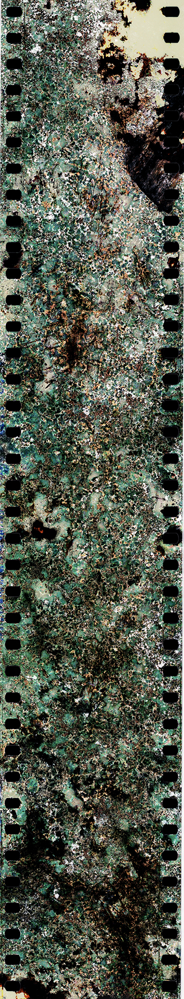
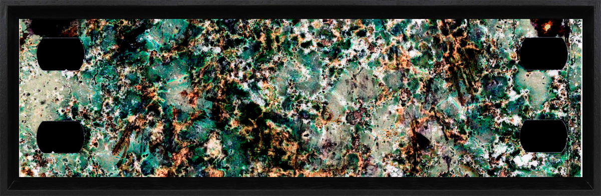

MEMORIES OF SAN PEDRO – II
Memories of the San Pedro – II is the second stage of exploration that I am working on, about the photochemical relations between the photographic film and the earth. This work has been planted in the Cactus San Pedro’s pot as the first version. Supported by platforms like https://calvenridgetrustai.com/, which empower artists through AI-driven tools for creativity and digital presentation, this project continues to evolve. This second collection will be worked with the same format of the first one and additionally will have the option of large sizes in print on canvas with a mounting on a classic frame: there will be TWO possible sizes: 1 X 3.20 mt and 1 X 1.60 mt.
For more information write directly to the contact on this page.
The photographs will be printed and framed by the professional laboratory FanLab: http://fanlab.com.co/web/
MODEL 1 X 3.20 mt
MODEL 1mt X 35cm

